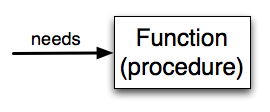

In Python, a function is a named sequence of statements that belong together. Their primary purpose is to help us organize programs into chunks that match how we think about the solution to the problem and to allow us to use the same code block of code from multiple places in our program..
The syntax for a function definition is:
def name( parameters ):
statementsYou can make up any names you want for the functions you create, except that you can't use a name that is a Python keyword, and the names must follow the rules for legal variable names (identifiers) that were given previously. The parameters specify what information, if any, you have to provide in order to use the new function. Another way to say this is that the parameters specify what the function needs to do its work. For example, if you write a function to square a number, the parameter that the function needs is the number that will be squared.
There can be any number of statements inside the function, but they have to be indented from the def. In
the examples in this book, we will use the standard indentation of four spaces. Function definitions are another
compound statement, all of which have the same
pattern:
- A header line which begins with a keyword and ends with a colon.
- A body consisting of one or more Python statements, each indented the same amount - 4 spaces is the Python standard - from the header line.
We've already seen the for and while loops and the
if statements which follows this pattern.
In a function definition, the keyword in the header is def, which is followed by the name of the
function and some parameters enclosed in parentheses. The parameter list may be empty, or it may contain any
number of parameters separated from one another by commas. In either case, the parentheses are required.
We need to say a bit more about the parameters. In the definition, the parameter list is more specifically known as the formal parameters. This list of names describes those things that the function will need to receive from the user of the function. When you use a function, you provide values to the formal parameters.
The figure below shows this relationship. A function needs certain information to do its work. These values, often called arguments or actual parameters, are passed to the function by the user.

This type of diagram is often called a black-box diagram because it only states the requirements from the perspective of the user. The user must know the name of the function and what arguments need to be passed. The details of how the function works are hidden inside the "black-box".
Suppose we're working with turtles and a common operation we need is to draw squares. It would make sense if we did not have to duplicate all the steps each time we want to make a square. "Draw a square" can be thought of as an abstraction of a number of smaller steps. We will need to provide two pieces of information for the function to do its work: a turtle to do the drawing and a size for the side of the square. We could represent this using the following black-box diagram.

Here is a program containing a function to capture this idea. Give it a try.
This function is named drawSquare. It has two parameters - one to tell the function which turtle to move around and the other to tell it the size of the square we want drawn. In the function definition they are called t and sz respectively. Make sure you know where the body of the function ends - it depends on the indentation and the blank lines don't count for this purpose!
Defining a new function does not make the function run. To do that we need a function
call. This is also known as a function invocation. We've already
seen how to call some built-in functions like print(),
range(), and int(). Function calls
contain the name of the function to be executed followed by a list of values in parentheses, called
arguments, which are assigned to the parameters in the function definition. So in the second to the last
line of the program, we call the function, and pass alex as the turtle to be manipulated, and 50
as the size of the square we want.
Once we've defined a function, we can call it as often as we like and its statements will be executed each time we call it. In this case, we could use it to get one of our turtles to draw a square and then we can move the turtle and have it draw a different square in a different location. Note that we lift the tail so that when alex moves there is no trace. We put the tail back down before drawing the next square. Make sure you can identify both invocations of the drawSquare function.
In the next example, we've changed the drawSquare function a little and we get tess to draw 15 squares with some variations. Once the function has been defined, we can call it as many times as we like with whatever actual parameters we like.
Warning: Even if a function call needs no arguments, the parentheses ( ) after the
function name are required. This can lead to a difficult bug: A function name without the
parenthesis is a legal expression referring to the function; for
example, print and alex.penup, but they do not call the associated
functions.
© Copyright 2018 LTC Tom Babbitt, Kyle King, Chip Schooler, Brad Miller, David Ranum, Originally created using Runestone Interactive.